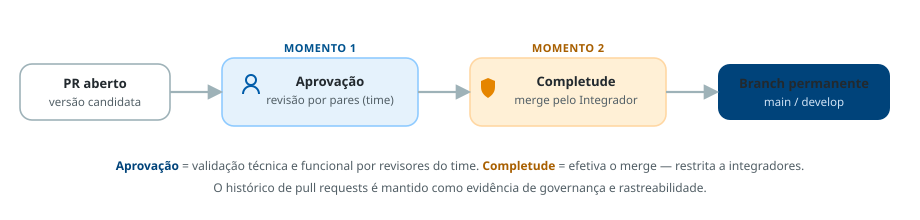

8
Diretriz
Pull Request deve ser o instrumento central de integração, revisão colaborativa e validação técnica
Regra
Todas as versões candidatas devem ser submetidas por Pull Request, permitindo revisão por pares, registro de decisões técnicas, rastreabilidade das mudanças e aplicação das políticas institucionais de qualidade e segurança.
Os dois momentos do Pull Request
O processo deve contemplar dois momentos distintos: a aprovação e a completude.
FiguraAprovação → Completude

Governança e rastreabilidade
- O uso consistente do Pull Request deve evitar versões não rastreáveis.
- A aprovação ratifica que os critérios de qualidade e conformidade foram atendidos.
- A completude é restrita a perfis autorizados (integradores).
- O histórico de Pull Requests deve ser mantido como evidência de governança e suporte a auditorias.
Referências metodológicas
As referências metodológicas sobre este assunto devem ser incluídas aqui.